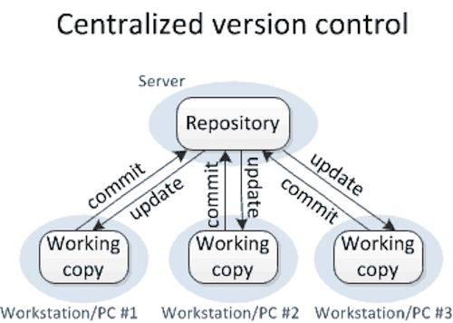
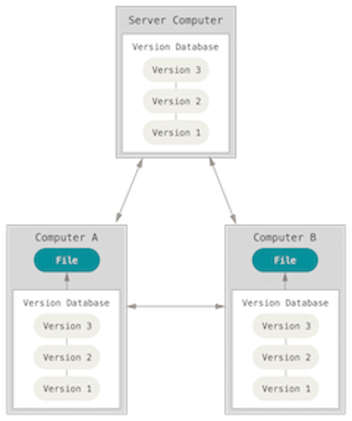
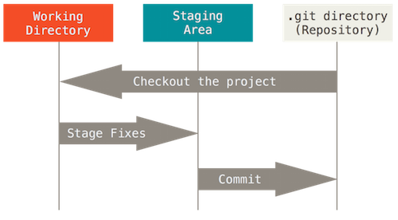

Contents
- Introduction
- Prerequisites
- Version Control System Architecture
- Storage
- Identity
- Git Structures
- Git Local Content Cycle
- For Further Reading
Introduction

This section takes a look at Git concepts.
A big thanks to authors Scott Chacon and Ben Straub, who have written the Pro Git book, which was used as a reference in distilling out the essential concepts of Git.
These contents are a very condensed version of that book.
The intent here is to boil down everything without the fluff to get you using Git ASAP.
Prerequisites
- None
Version Control System Architecture
Centralized
CVS utilized a client/server which requires network connectivity and provides little isolation from problems due to bad commits. It requires read and write access on the part of all participants. It may discourage earlier check-ins to avoid impacting others on the team. If a server becomes unavailable, a team is dead in the water until it can be restored and come back online.
 image credit
Distributed
Rather than having to rely on a centralized repository which requires a client/server connection, a distributed version control system clones an entire copy of a repository locally. The developer works with the local copy and when ready, utilizes tools to push these changes to other repository copies on other machines. Consequently, if a server dies, every clone is a full backup usable for a restore.
 image credit
Storage
Git can store any type of content object, binary or text.
Content is stored as trees and and blobs, very similar to a unix file system.
Unlike CVS, which stores deltas (changes) between two files, Git stores actual snapshots of these files. When changes are committed, each commit will have its own collection of snapshots. If a file hasn't changed, Git creates a link instead of a copy of the file.
Rather than use filenames to identify these snapshots, Git uses a more powerful identifier. Every content snapshot item in Git gets a checksum to establish an identity.
This checksum is used in a key/value pair for referencing any snapshot in storage.
Identity
Git calculates a unique 40 byte identity called a SHA-1 hash from the contents of a file or directory. This SHA-1 identity is used in many Git commands for identifying prior commits.
The full length SHA-1 hash identity is too long to type into commands,
so an abbreviated identity using the first n characters of a SHA-1 key can still be unique and is commonly used.
Git specifies a default length of 7 but allows a minimum of 4 (however identity becomes very ambiguous).
The real beauty of using the SHA-1 digest is that the same value will be calculated for the exact same file on any machine. This provides a truly globally unique identifier and
is very useful for comparing commit contents in a distributed network of repository clones.
Git Structures
A project and its files will exist in one of these structures, indicated by their state:
- Git directory - project metadata and object database (copied when you clone a repository)
- Working directory - single version checkout of the project (pulled from Git directory)
- Staging area (INDEX) - content what will go into next commit (lives in your Git directory)
The concept of the staging area index is intended as a work area prior to commit.
 image credit
Git Local Content Cycle
A file moves through the following states into Git:
- Modify - any changed files in working directory not yet committed to database
- Stage - add current versions of modified files to your staging area in preparation for next commit
- Commit - stores snapshot of files from staging area permanently to Git directory
IntelliJ sidenote: There is no tooling around the Staging Area (index) in IntelliJ; it is abstracted into the commit process. Assuming that you've setup 'silent add' in IntelliJ Preferences:
- newly created files will always show up as staged for commit
- modified files will never be staged for commit; rather they will remain unstaged until commit
For Further Reading
- See GitHub Workflow Summary for more specific information about GitHub workflow and terminology
- Git Book - utilized heavily here!
- Git Objects
- Git SHA-1 Width
- No Staging Area IntelliJ
- GitHub Workflows